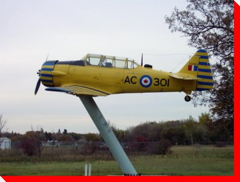

|
LARGE CANADIAN ROADSIDE ATTRACTIONS
PLANES ON PEDESTALS
|
|


Harvard
Winnipeg, Manitoba
Location: Air Force Heritage Park, CFB Winnipeg
Manufacturer and Model: North American Harvard
Credit: Robert Vipond of 402 Squadron

Planes on Pedestals
Main
| By Location | By Type | Wanted Photos of Planes
Large Canadian Roadside Attractions